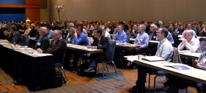
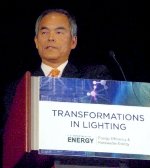
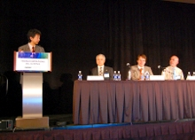
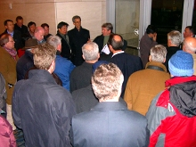
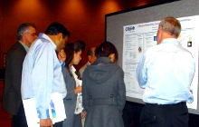
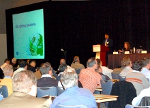

More than 350 researchers, manufacturers, and other industry insiders and observers gathered in Raleigh, N.C., February 2–4, 2010, to participate in the "Transformations in Lighting" Solid-State Lighting R&D Workshop, hosted by DOE. The workshop was the seventh annual DOE meeting to accelerate SSL technology advances and guide market introduction of quality SSL products, and it brought together a diverse gathering of participants to share insights, ideas, and updates.
DOE SSL Portfolio Manager James Brodrick kicked off Day 1 by noting the tremendous progress that's been made over the past decade, which has seen SSL evolve from a technology limited to traffic signals to one that can compete with incumbent lighting for certain applications. He observed that the easy problems have already been solved, and that today's challenges require new ways to climb whatever "wall" stands in the way. Brodrick framed the two questions that would serve as the workshop's main themes: "What are the limits of SSL?" and "How can we overcome them?"
Shuji Nakamura of the University of California, Santa Barbara, followed with a keynote talk that answered those questions by reviewing the multiple threads being explored in the UCSB laboratories. He described how he and his team are working to better understand the green gap issue, prevent efficiency droop, improve extraction efficiency, develop high quantum efficiency phosphors, and explore bulk growth of GaN. Nakamura said it will take improvements in all of these areas to achieve the full energy-saving potential of SSL. He noted that while DOE's current efficacy target is 200 lm/W for LED devices, he and his team feel that 250 lm/W is feasible and are aiming that high.
Fred Welsh of Radcliffe Advisors then previewed the proposed updates to the DOE SSL R&D Multi-Year Program Plan (MYPP), which include more information on price targets and progress, clarification of some of the tasks and metrics, reprioritization based on needs and progress, and coordination with DOE's manufacturing initiative.
Improving Efficiency
Next, a panel of speakers, moderated by Brodrick, discussed the limits of SSL efficacy. Christian Wetzel of Rensselaer Polytechnic Institute began the panel with an examination of how eliminating defects can improve LED efficiency. Focusing on avoiding efficiency droop in green LEDs, he explained how improving the metal organic vapor phase epitaxy (MOVPE) processes from blue, through green, to yellow is a key to closing the "green gap," and how avoiding non-uniformity, V-defects, and impurities also plays an important role.
Steve Paolini of Lunera Lighting Inc. discussed whether current packaging technology limits LED device efficacy. He concluded that it does, but only near the limit. Paolini made the point that LED packages trap light and heat, and that the two main ways to increase package efficiency are to dispose of the heat and increase the encapsulant's refractive index. He explored the question of voltage, the use of phosphors, and the issue of big chips vs. small chips, and also examined the role played by the driver, optics, and thermal resistance.
Yoshihiro Ohno of the National Institute of Standards and Technology (NIST) followed with a presentation on how improving the color spectrum can increase LED efficacy. He explained luminous efficacy and reviewed the relationship between light spectra and color quality, noting that narrow-band RGB peaks can enhance color to the point where, from an end user's perspective, it gives a reasonable approximation of sunlight. Ohno discussed the drawbacks of the color rendering index (CRI) as a metric for SSL and described a proposed new metric developed by NIST, the color quality scale (CQS), that is more appropriate for SSL than CRI.
Mike Hack of Universal Display Corp. and Yuan-Sheng Tyan, formerly of Eastman Kodak Co., each discussed the barriers to developing OLEDs with an efficacy of 150 lm/W. Hack stated that while there are many challenges, he doesn't believe there are any fundamental barriers. He identified outcoupling efficiency as "the main issue with OLEDs today" but noted that UDC and Kodak have already made good progress toward achieving the target for this, and that other targets for developing a 150 lm/W OLED are also within reach.
Tyan also compared three types of state-of-the-art OLED devices: all-fluorescent, all-phosphorescent, and hybrid. He calculated the theoretical maximum efficacy of a phosphorescent single-stack OLED and a hybrid double-stack OLED, and examined the major loss mechanisms. Tyan stated that "the first hurdle to good efficiency is to have a good blue phosphorescent system."
Joe Shiang of GE Global Research concluded the panel with a discussion of OLED lifetime. He made an important distinction between shelf lifetime and operating lifetime and observed that many of the pieces are in place for long OLED shelf life, but that we need more systems demonstration and integration so we can understand the whole chain. Shiang noted that while the operating lifetime of OLEDs is currently at about 20,000 hours, there is a super-linear tradeoff between lifetime and brightness, "so we need better tools to understand what goes into that curve."
Day 1 closed with a tour of Raleigh municipal LED lighting installations. Led by Raleigh Assistant City Manager Dan Howe, attendees first visited the Convention Center's underground parking facility, which features two separate LED installations, one of them incorporating motion detectors. The tour then passed through nearby streets lit with LEDs on the way to City Plaza, a park featuring LED uplighting in bollards and landscape beds as well as four decorative towers lit with programmable LEDs. Nearby was an outdoor ice-skating rink with LED area lights powered by flexible solar film on the poles, followed by LED canopy fixtures in front of Progress Energy's former corporate headquarters, and an opportunity to compare three different kinds of LED street lighting. The tour then visited the Raleigh Municipal Complex, where attendees saw a mobile solar area light and compared several different LED installations in the parking garage. Next came a temporary outdoor parking lot at Campbell University School of Law that was lit by solar-powered LED fixtures. Walking back to the hotel, attendees passed the colorful Cree Shimmer Wall, which features 80,000 breeze-activated aluminum squares lit by programmable LEDs and has transformed a functional side of the Raleigh Convention Center into a major landmark.
Lessons from the Field
Day 2 began with a panel discussion sharing varied perspectives on lessons learned from recent real-world LED lighting installations. Dan Howe described Raleigh's broad municipal experience with SSL, which dates back to 2007, when it became the country's first LED City. Raleigh's use of LEDs ranges from parking garage, to public plaza, to greenway underpass, to street lighting and includes decorative applications as well as a number of solar-powered fixtures. Howe noted that overall, user satisfaction has been high, maintenance costs have been low, and lifetime performance has been better than expected. He reviewed the savings LED installations are bringing the city but observed that the economics have not yet reached the tipping point for street lighting and interior office lighting.
Chip Israel of Lighting Design Alliance gave a lighting designer's perspective on SSL. He stressed that designers can't just focus on the economics but must take architectural and human needs into consideration, and he urged manufacturers to develop LED fixtures for directionality, which he considers "a huge opportunity" for SSL. Israel cited the poor performance of LED luminaires in Round 9 of CALiPER testing as illustrating one of the reasons designers are still hesitant about specifying them, noting that in one of his projects, 40 percent of the LED fixtures failed. "As designers, we need to have the ammunition to say to the client, 'This is right for you,'" he said.
Bruce Kinzey of Pacific Northwest National Laboratory (PNNL) provided an update on the I-35W Bridge in Minneapolis, which was rebuilt with LED lighting and is now being monitored as part of DOE's GATEWAY demonstration program. Kinzey noted that ongoing monitoring detected a 12-percent reduction in the bridge's light levels just a few months after its September 2008 reopening. Investigating further, DOE and the manufacturer identified two main causes: a bubbling problem in the optical gel of the luminaires that was subsequently corrected by the manufacturer, and dirt depreciation. "These 'learning curve' issues are to be expected in the early years," he said. "But we should refrain from using phrases like 'maintenance-free' when describing SSL."
Mark Schulkamp concluded the panel by sharing his perspective as an electrical contractor. As the installer whose job it is to "make it work," he observed that LED lighting products don't always live up to their promises, such as being dimmable or being "plug and play." He made the point that this leaves him and other electrical contractors with all sorts of unanticipated obstacles to overcome, which he illustrated by describing four LED installations he's done. Schulkamp said he thinks LED lighting that's easier to install and service is on the horizon and that SSL is probably the "wave of the future."
DOE-Funded R&D Update
, Mike Hack (UDC), Rob Harrison (Osram Sylvania), Gary Silverman (Arkema), Monica Hansen (Cree), Andy Armstrong (Sandia National Laboratories), Tony Burrell (Los Alamos National Laboratory), Chris Summers (PhosphorTech), and Franky So (University of Florida).") Brodrick began the next session with an overview of the DOE SSL R&D portfolio budget and areas of focus, with recognition for project teams making significant contributions in 2009. Awardees then gave presentations on their achievements:
Brodrick began the next session with an overview of the DOE SSL R&D portfolio budget and areas of focus, with recognition for project teams making significant contributions in 2009. Awardees then gave presentations on their achievements:
- Andy Armstrong discussed how Sandia National Laboratories is using defect spectroscopy to improve green LEDs.
- Franky So described the University of Florida's research to optimize blue OLED efficiency at high brightness.
- Christopher Summers offered an overview of PhosphorTech Corp.'s efforts using advanced phosphor systems for warm, efficient LEDs.
- Tony Burrell presented Los Alamos National Laboratory's research to develop a cost-effective electrode for OLED general illumination.
- Monica Hansen discussed how Cree Inc. is improving LED efficiency and performance.
- Gary Silverman described how Arkema Inc. is progressing toward commercially viable OLED devices.
- Robert Harrison reviewed Osram Sylvania Development Inc.'s efforts to develop a high-efficiency LED downlight.
- Mike Hack discussed Universal Display Corp.'s work to develop commercially viable OLED panels.
- Decai Sun talked about how Philips Lumileds Lighting is raising the bar for warm-white LED luminaire performance.
A Wednesday evening poster session/reception featured all current DOE-funded SSL R&D projects, and provided attendees with additional opportunities for discussion, information exchange, and potential partnering. The 2009 Project Portfolio (PDF 1.0 MB) provides more on each of the current DOE SSL projects.
Reliability and Lifetime
The panel discussion on reliability and lifetime was moderated by Fred Welsh of Radcliffe Advisors, who noted that a DOE-industry working group on the topic expects to publish guidelines in the coming months.
Kevin Dowling of Philips Color Kinetics examined the question of luminaire lifetime, which he called "one of the biggest issues we face in solid-state lighting." He referred to the improvements over the past few years in CRI and other key parameters, but decried the lack of quality due to reliability issues as revealed by CALiPER testing and field experience. Dowling emphasized that reliability and lifetime problems need to be addressed by looking at the underlying causes. He stressed that these are not issues that can be tackled individually, but require a collaborative, industrywide effort.
David Szombatfalvy of GE Lighting Solutions talked about how lifetime can be demonstrated. He explained the process steps he and his colleagues use at GE, including identifying reliability targets, performing a gap assessment to identify risk and drive risk mitigation, and then allocating and tracking reliability by means of a "scorecard" to roll up available supplier and field data. Szombatfalvy made the point that reliability is more than just lumen maintenance, and emphasized that testing only tells you what you actually have, and that reliability should be designed into both product and process.
Terry Clark of Finelite emphasized the importance of color quality and consistency over the life of the product. He explained that color shift is an issue regardless of the type of light engine, and that it is very application-dependent. Clark called color shift a "daunting" problem for LED-based luminaires, noting that LEDs shift color, that different luminaires do so at different rates, and that testing for color consistency and fixing color shift are expensive. He called for the creation of a working group on color shift for high-volume bulb and lamp replacements, with separate groups focused on standard- and specification-grade luminaires.
Mark Hodapp of Philips Lumileds Lighting reviewed the reliability modeling that his company has done and discussed how it affects complete luminaire systems. He stressed that system reliability has to be designed into the product. Hodapp observed that system reliability goes beyond LEDs to include optical, mechanical, thermal, electrical, and other elements. He noted that Philips will soon post online a system modeling tool it has developed that lets the user input the drive conditions and calculates the probability for lumen maintenance and catastrophic failures as well as expected system lifetime.
Specifying Today's LED Products
Lighting designer Naomi Miller of PNNL kicked off Day 3 with insights on the challenges of specifying today's LED lighting products. She called for better communication about product performance as well as the standardization of SSL terminology so that it means the same thing to everyone. Miller stressed the need for products to be easily installable and serviceable, and for the luminaire manufacturer to serve as the single point of responsibility for the entire system, rather than there being a different point for each component.
Recognizing Quality in the Marketplace
Ruth Taylor of PNNL discussed two lighting design competitions that spotlight product manufacturers who are "getting it right" with commercial and residential luminaires. Lighting for Tomorrow is a residential lighting design competition sponsored by DOE, the American Lighting Association, and the Consortium for Energy Efficiency. Next Generation Luminaires™ is a commercial luminaire design competition sponsored by DOE, the International Association of Lighting Designers, and the Illuminating Engineering Society of North America.
Taylor highlighted the 2009 Lighting for Tomorrow winners, noting that the 2009 Next Generation Luminaires winners will be announced at the 2010 Strategies in Light Conference. She observed that the Next Generation Luminaires competition is inclusive rather than exclusive, with all qualifying products being recognized, and that the number of entries and recognized products doubled in 2009 over the previous year. Taylor then introduced representatives from three manufacturers that had winning products in the design competitions, who talked about the development process:
- Ravi Kaushik of GE Lighting explained that the development of the Immersion™ display case lighting system, which is used primarily for jewelry displays, was a natural extension from lighting systems for refrigerated display cases and leverages the directionality of LEDs.
- Gary Trott of Cree Inc. talked about the four key questions Cree focused on in developing the LR6-DR1000 6" downlight: what is the lighting problem, what is the competing solution, who is the primary customer, and what is the maintenance strategy.
- Kevin Dowling of Philips Color Kinetics described some of his company's early LED cove light offerings and traced the evolution of that product line. He emphasized the integration of power factor correction as a key factor in the development of the company's eW Cove Powercore, which raised the cost of the fixture but lowered the overall system cost as well as the cost of installation.
Participants Provide Input on DOE R&D Priorities
On Wednesday and Thursday afternoons, workshop participants divided into separate LED and OLED track sessions to explore the proposed priority tasks from DOE's updated SSL R&D Multi-Year Program Plan (MYPP). The input from these track sessions will be used to update the MYPP and guide DOE planning for R&D solicitations.
Wednesday's LED track session was a follow-up to Monday's panel discussion on the limits of efficacy and considered how R&D can lead to higher packaged device efficacies through substrate development, emitter materials, down conversion, and novel architectures. Thursday's LED track session addressed overall luminaire performance, especially reliability. Building on Wednesday's panel discussion on reliability and lifetime, it emphasized reliability methods and optimization, electronics reliability, and color maintenance options.
Wednesday's OLED track session addressed the limits to OLED efficiency, with an emphasis on materials considerations, electrode design and materials, outcoupling methods, and other issues related to basic device efficacy. Thursday's OLED track session addressed design optimization of OLED lighting. Considerable discussion on the tradeoffs between lifetime, cost, and brightness has occurred in the past year, and this session considered these issues in terms of panel design for practical OLED lighting.
Brodrick concluded the three-day workshop by thanking participants for their input and participation. He noted two additional DOE SSL workshops in 2010: the SSL Manufacturing R&D Workshop in April and the Market Introduction Workshop in July. He also encouraged attendees to stay apprised of DOE SSL program activities by visiting www.ssl.energy.gov.